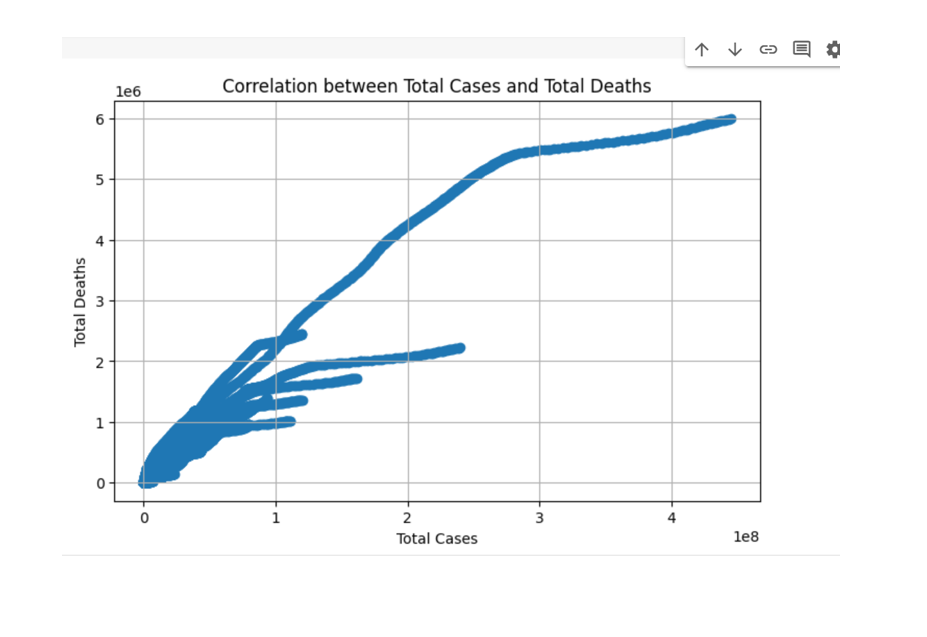
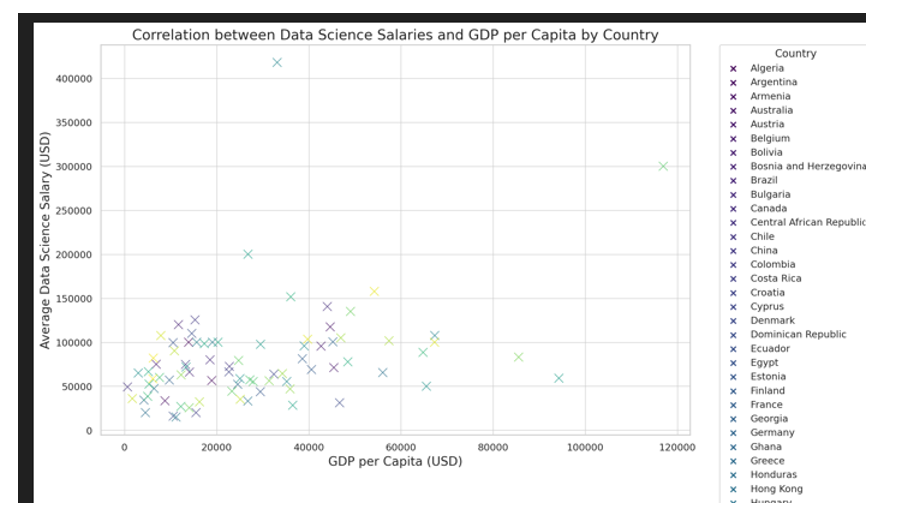
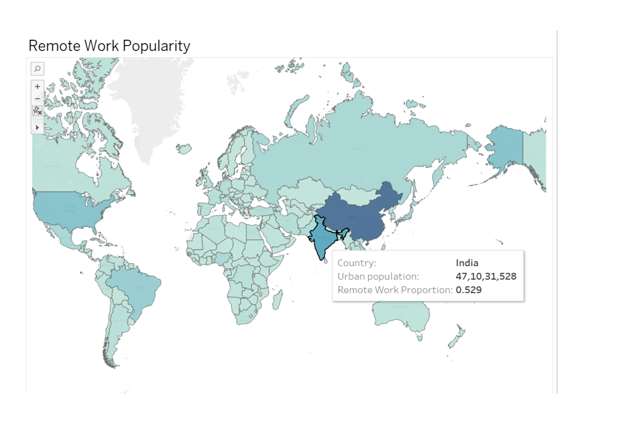
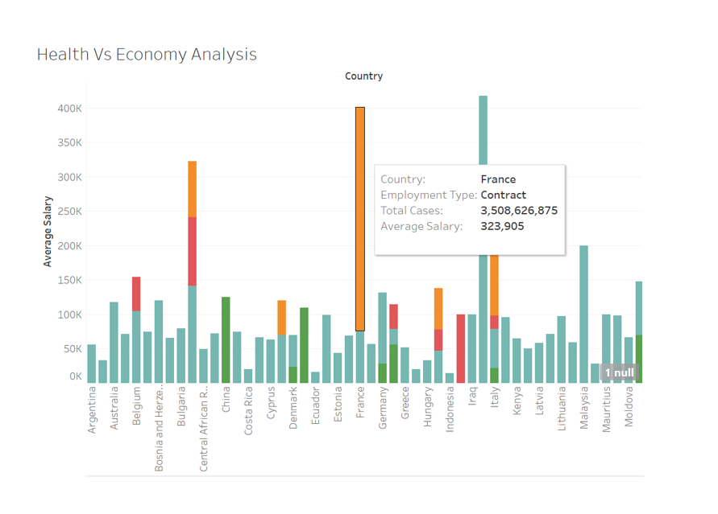
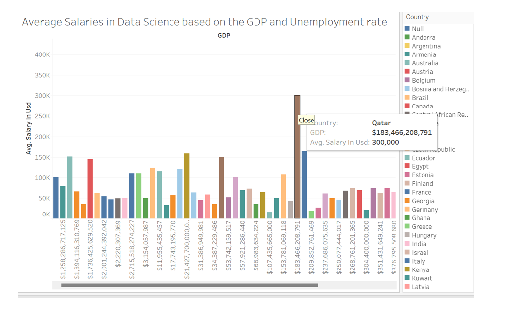
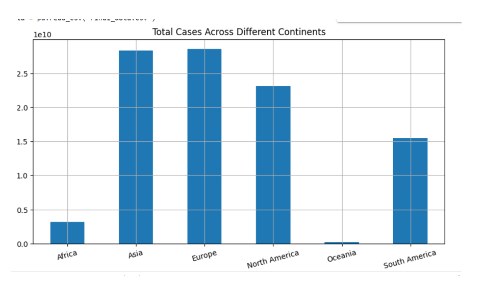
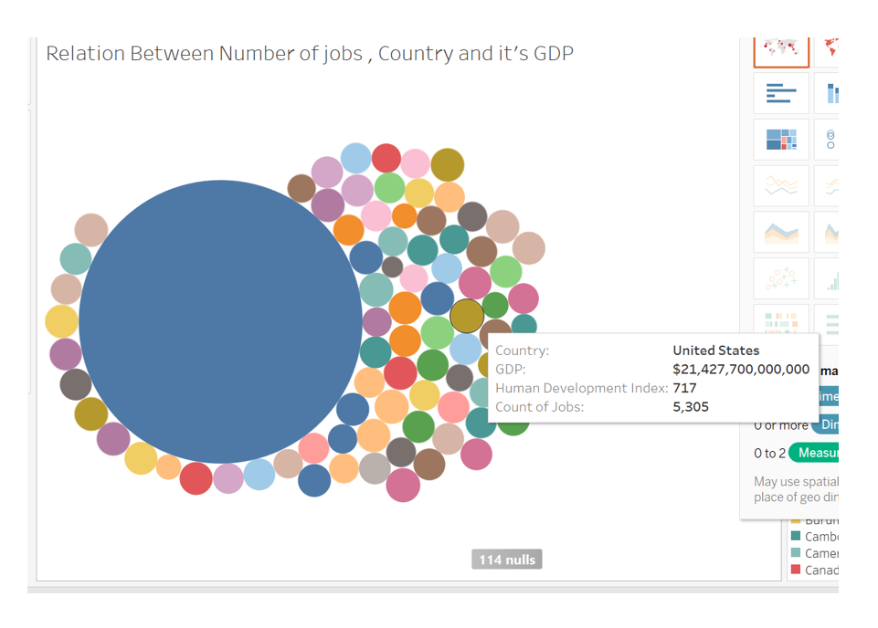
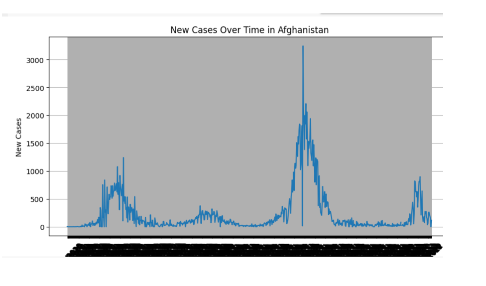

-
Task 2: To find correlation between total cases and total deaths

-
Task 3: To understand Correlation between data science salaries and GDP per capita by country

-
Task 4: To understand Remote Work Popularity

-
Task 5: To understand Economy vs Health Analysis

-
Task 6: To understand the Average Salaries in Data Science Based on GDP and Unemployment rate

-
Task 7: To understand total cases across different continents

-
Task 8: To understnad the relation between number of jobs, it's gdp

-
Task 9: To understand New cases over time in Afghanistan
